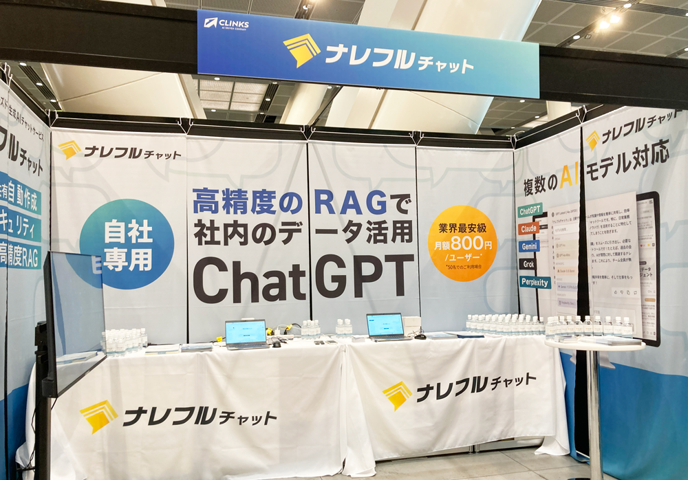
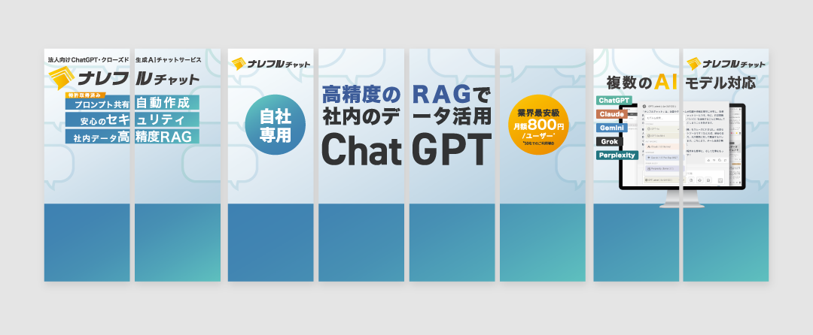
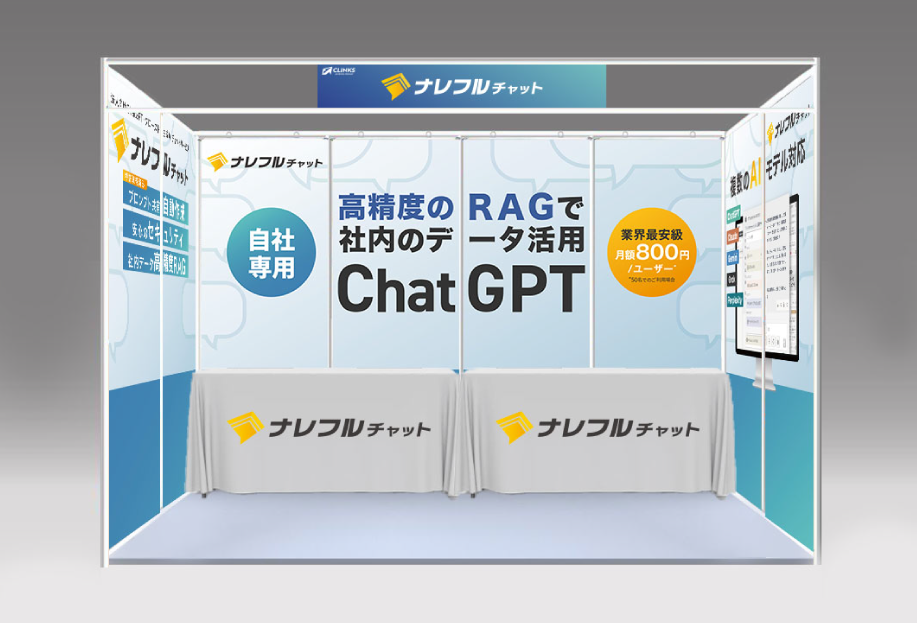
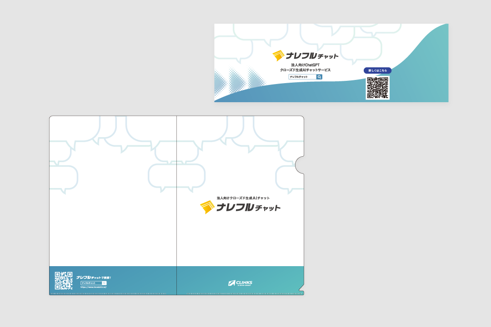
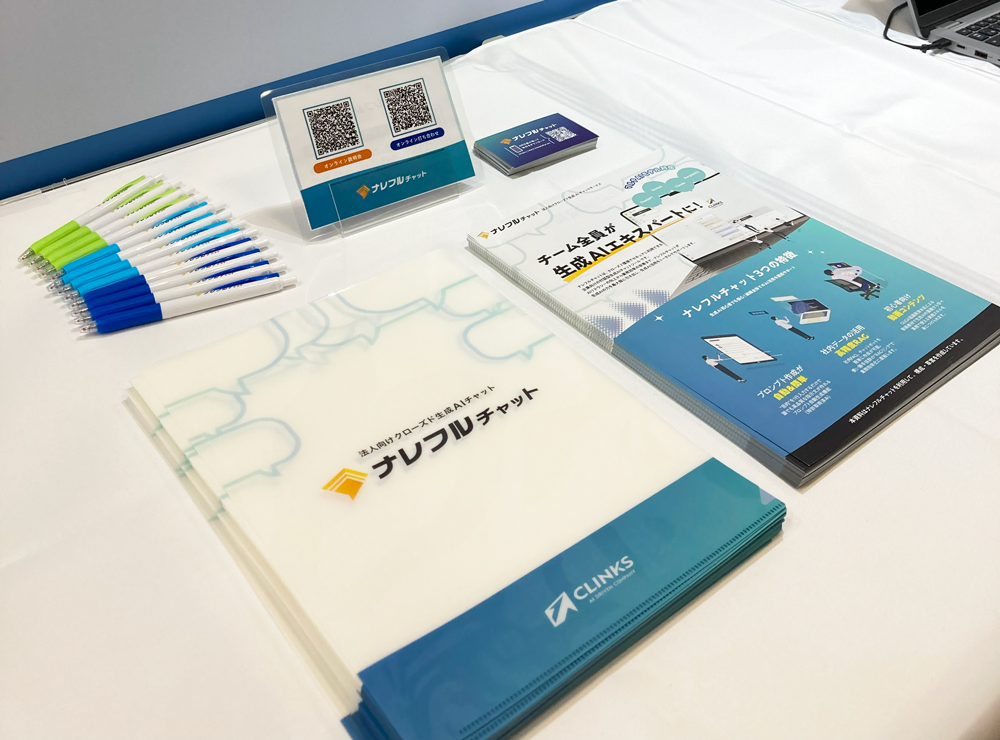
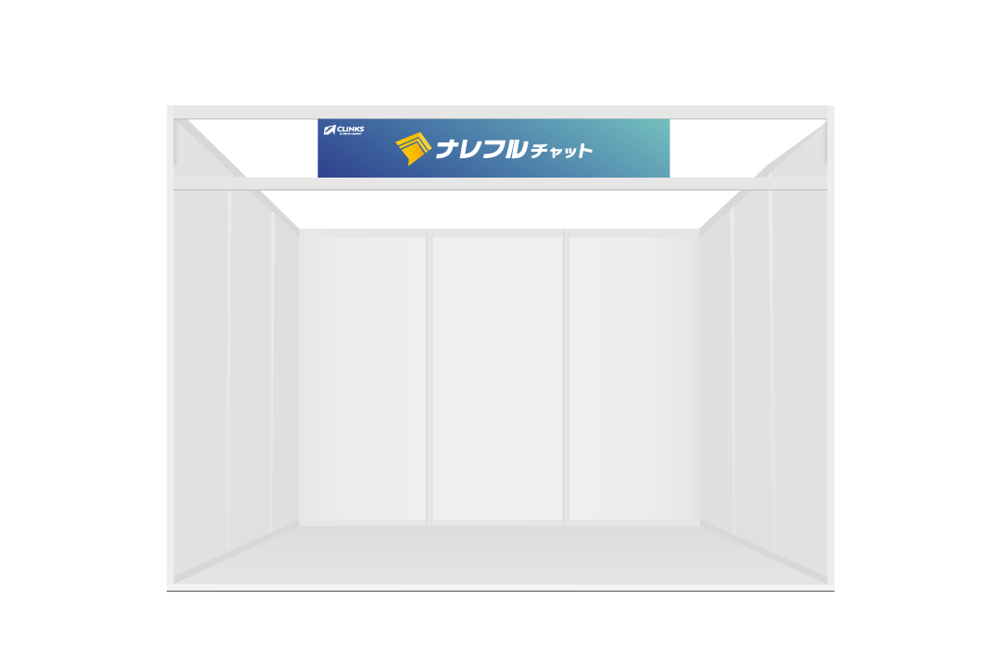

GRAPHIC
EXHIBITION
IN-HOUSE
展示会 AI博覧会summer2025

プロジェクトの概要
AI博覧会 Summer 2025への自社のサービス出展に伴い、ブースで使用する各種制作物のデザインを担当。タペストリー、テーブルクロス、社名ボードに加え、配布用のノベルティ（ペン・クリアファイル・ボトルウォーター）まで一式の制作を行いました。ブース全体の統一感を意識し、来場者への視認性とブランドイメージの浸透を目的としたデザイン設計を行っています。
課題と解決策
複数の制作物を展開する中で、ブース全体としての統一感を出すため、タペストリーやテーブルクロスなどの大型グラフィックからノベルティまで、ブランドカラーやトーンを統一し、一貫したビジュアル設計を実施。また、各制作物の用途に応じて情報量や訴求内容を整理し、来場者との接点ごとに適切な役割を持たせています。デザイン提案の段階でブース全体のイメージやノベルティの仕上がりイメージを可視化し、完成形を共有することで、認識齟齬のないスムーズな進行を行いました。
成果
ブース全体のビジュアルを統一することで、ブランド認知の向上および来場者への印象定着に貢献。また、ノベルティの配布により、リード数を獲得しやすくなり、春に開催されたAI博覧会より3倍のリード数を獲得しました。





